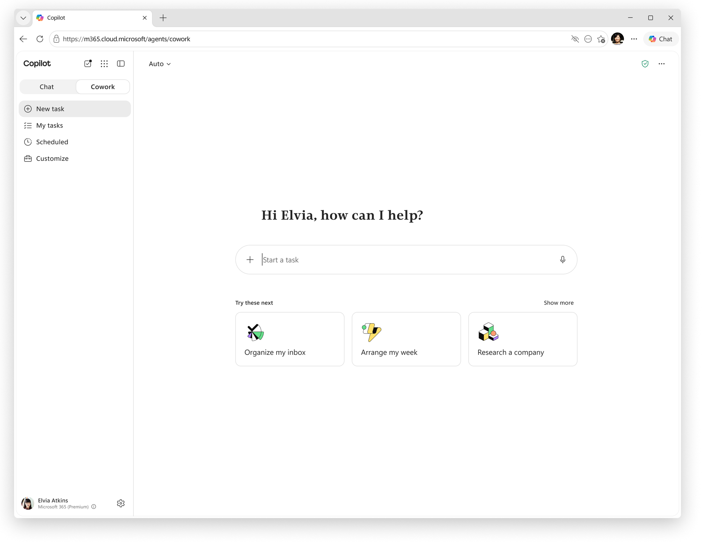
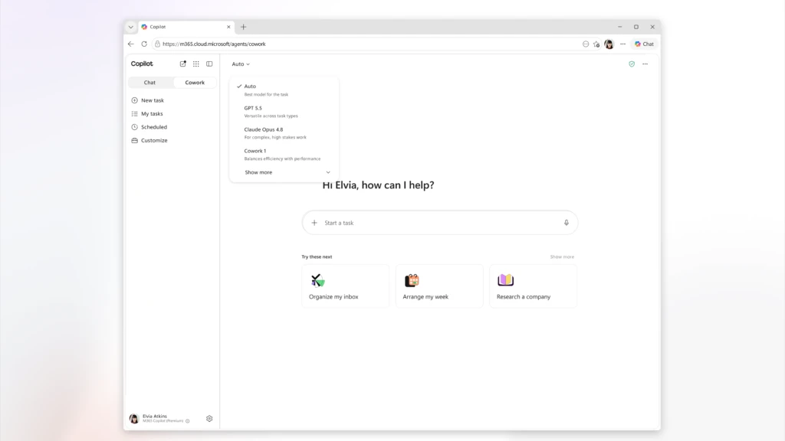
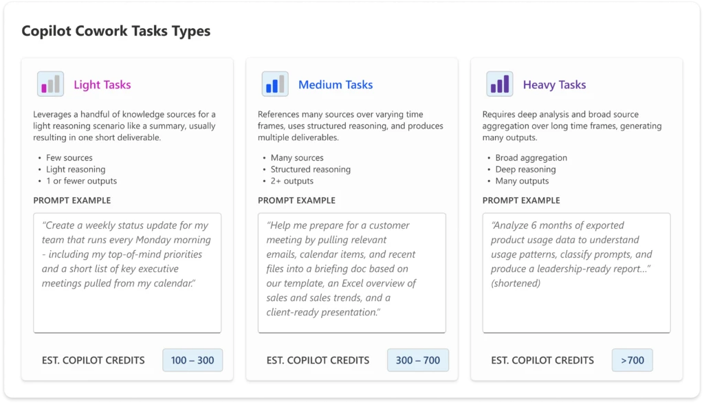

코파일럿 코워크(Copilot Cowork)란 — 코파일럿 채팅과 다른 점, 정식 출시 정보와 이용 조건
코파일럿 코워크는 마이크로소프트 365 코파일럿의 새 에이전트 기능이에요. 영어 표기는 Copilot Cowork예요. 사용자가 작업만 정해 주면 끝까지 실행해요. 여러 도구를 거쳐 완성된 결과물로 돌려줘요.
이 글은 2026.07.27 기준으로 정리했어요. 정식 출시일은 2026년 6월 16일이에요.
코파일럿 채팅과 갈리는 지점은 하나예요. 답만 주고 끝나는지, 작업을 끝까지 대신 처리해 완성본을 내놓는지예요.
코파일럿 코워크가 정확히 뭔가요
코파일럿 코워크는 에이전틱 AI를 마이크로소프트 365에 적용한 기능이에요. 에이전틱 AI(agentic AI)는 사람이 매번 지시하지 않아도 되는 AI예요. 여러 단계를 스스로 계획하고 실행해요.
여러 단계로 이어지는 긴 작업을 사람 대신 끝까지 실행해요.
마이크로소프트는 2026년 6월 16일 코파일럿 코워크를 정식 출시(GA)했어요. 그전까지 3개월은 프리뷰로 운영됐어요. 공식 문서 기준으로 프리뷰 기간은 2026년 3월 30일부터 6월 16일까지였어요.
마이크로소프트 코파일럿·에이전트·플랫폼 부문 EVP는 찰스 라만나(Charles Lamanna)예요. 공식 발표문에서 코파일럿 코워크를 이렇게 설명해요.
"Copilot Cowork executes complex, long-running, multi-tool tasks. You define the work and Cowork runs it end-to-end and returns a completed result, not just a draft or a recommendation." (마이크로소프트 공식 블로그, 2026.06.16)
정리하면 사용자는 할 일만 정하고, 실행과 마무리는 코파일럿 코워크가 맡는다는 뜻이에요.

코파일럿 코워크 홈 화면이에요. 채팅창처럼 생겼지만 '작업'을 입력하면 여러 단계를 거쳐 하나의 결과물로 돌아와요.
이미지 출처: Microsoft Learn 공식 문서 — Copilot Cowork 개요 · 네이버 본문엔 받아서 재업로드 권장
코파일럿 채팅이랑 뭐가 다른가요
코파일럿 채팅은 질문 하나에 답 하나를 주고, 코파일럿 코워크는 작업 하나를 끝까지 대신 처리해요.
| 구분 | 코파일럿 채팅(Copilot Chat) | 코파일럿 코워크 |
|---|---|---|
| 응답 방식 | 대화형 질문에 즉시 답변 | 여러 단계를 스스로 거쳐 작업을 완료 |
| 걸리는 시간 | 보통 즉시 | 길게는 몇 시간까지(long-running) |
| 결과물 | 답변 텍스트·초안·추천 | 완성된 문서·보고서 같은 산출물 |
| 도구 사용 | 제한적인 단발성 조회 | 여러 도구를 연결해 순차 실행(multi-tool) |
| 실행 승인 | 답변만 받고 끝 | 민감한 행동(메일 발송·팀즈 게시·회의 예약)에만 사전 승인을 구함 |
표: 코파일럿 채팅과 코파일럿 코워크 비교 (마이크로소프트 공식 FAQ·GA 발표문 기준, 2026.06.16 GA 발표 반영)
이 차이는 라만나 EVP의 설명과 그대로 맞물려요. 코파일럿 채팅이 초안이나 추천을 준다면, 코파일럿 코워크는 완성본을 목표로 움직여요.
코파일럿 코워크로 할 수 있는 일
코파일럿 코워크는 커뮤니케이션·문서·일정·조사·자동화, 다섯 갈래로 기능을 제공해요.
- 커뮤니케이션 — 받은편지함 정리, 메일 회신 초안, 메시지 요약
- 문서·파일 — 문서·스프레드시트·프레젠테이션 작성과 정리
- 일정·회의 — 한 주 일정 정리, 회의 준비, 회의록 요약
- 조사 — 기업·주제 리서치, 여러 출처를 모아 정리
- 자동화 — 반복 작업을 예약해 두면 코파일럿 코워크가 알아서 실행
위에서 본 홈 화면에도 추천 작업 카드가 떠요. 각 카테고리를 대표하는 예시예요.
- 받은편지함 정리(Organize my inbox)
- 이번 주 일정 짜기(Arrange my week)
- 기업 조사(Research a company)
어떤 AI 모델로 구동되나요
코파일럿 코워크는 여러 AI 모델 중에서 작업에 맞는 모델을 골라 실행해요.
공식 문서 기준으로 마이크로소프트는 Anthropic 모델을 서브프로세서로 사용한다고 밝혀요. 서브프로세서는 데이터 처리를 위탁받는 협력사라는 뜻이에요.
2026년 7월 17일 갱신된 공식 문서 기준 모델 선택 목록은 이래요.
- Auto — 기본값. 작업에 맞는 모델을 코파일럿 코워크가 알아서 골라요
- Claude Sonnet 5 — 일상적 작업에 효율적이고 응답이 빨라요
- Claude Opus 4.8 — 복잡하고 중요한 작업, 깊은 추론·다단계 분석에 맞아요
- GPT 5.5(Frontier) — OpenAI 계열 모델이에요. 여러 작업 유형에 두루 맞고, 긴 글이나 출처 인용에 강해요. Azure AI Foundry에서 호스팅돼요
- Claude Fable 5(Preview) — 가장 어려운 작업용. 기본은 꺼져 있고, 관리자가 코파일럿 설정에서 켜야만 목록에 나타나요
- Sonnet + Opus Advisor — Sonnet이 쓰고 Opus가 검토하는 페어링 모드예요
마이크로소프트 자체 모델인 Cowork 1은 아직 나오지 않았어요. GA 발표 당일 "곧 나온다"고 예고만 됐어요. 한 달 넘게 지난 최신 공식 문서에도 여전히 없어요.

2026년 6월 16일 GA 발표 당일 공개된 화면 예시예요. 지금 실제 목록은 이후 갱신돼서 이 화면과는 좀 달라요. 이 화면에 보이는 Cowork 1도 그때 예고용으로 함께 나온 항목이고, 아직 실제로 고를 순 없어요.
이미지 출처: 마이크로소프트 365 공식 블로그 — Copilot Cowork GA 발표 · 네이버 본문엔 받아서 재업로드 권장
이용하려면 무엇이 필요한가요
코파일럿 코워크는 개인용 마이크로소프트 365(무료·유료 개인 구독 모두)로는 못 써요. 기업용 라이선스가 있어야 써요.
공식 시작 가이드 기준으로 필요한 조건은 이래요.
- 기업용 마이크로소프트 365 코파일럿 사용자 구독 라이선스
- 조직 관리자의 코파일럿 코워크 기능 활성화
- 사용량 기반 과금(코파일럿 크레딧) 활성화
- 최신 버전 브라우저
- 조직의 Anthropic 모델 사용 활성화
조직 관리자가 기능을 활성화해야, 그 조직 구성원들이 코파일럿 코워크를 쓸 수 있어요. 개인이 임의로 켤 수 있는 설정이 아니에요.
과금은 코파일럿 크레딧 단위로 소모돼요. 공식 안내 기준으로 종량제(PayGo)는 크레딧당 0.01달러예요. 약정형은 P3 요금제로 안내돼요.
크레딧 소모량은 작업 난이도에 따라 갈려요. 가벼운 작업은 100~300, 중간 작업은 300~700을 예상해요. 무거운 작업은 700을 넘어가요.
| 작업 등급 | 특징 | 예상 크레딧 |
|---|---|---|
| Light(가벼운 작업) | 출처 몇 개, 짧은 산출물 1건 | 100~300 |
| Medium(중간 작업) | 여러 출처 종합, 산출물 2건 이상 | 300~700 |
| Heavy(무거운 작업) | 깊은 분석, 폭넓은 출처, 많은 산출물 | 700 초과 |
표: 코파일럿 코워크 작업 등급별 예상 코파일럿 크레딧 (마이크로소프트 공식 인포그래픽 기준, 2026.06.16 기준)

공식 인포그래픽이 소개하는 작업 등급 예시예요. 등급이 높을수록 출처·산출물이 늘고 크레딧도 커져요.
이미지 출처: 마이크로소프트 365 공식 블로그 — Copilot Cowork GA 발표 · 네이버 본문엔 받아서 재업로드 권장
정리하면 세 가지가 다 있어야 쓸 수 있는 기능이에요. 기업 라이선스·관리자 활성화·사용량 과금이에요. 개인용 마이크로소프트 365(무료·유료 구독 모두)만으로는 켜지지 않아요.
안전장치는 어떻게 되어 있나요
메일 발송이나 팀즈 게시처럼 민감한 행동을 하기 전에 승인을 구해요. 승인하면 그 행동을 실행하고, 위험도가 중간·높음인 행동엔 위험 수준도 보여줘요.
공식 문서 기준으로 안전장치는 이렇게 갖춰져 있어요.
- 민감한 행동 승인 — 메일 발송·팀즈 게시·회의 예약 같은 행동만 승인을 거쳐요. 비슷한 행동은 앞으로 건너뛰도록 설정할 수도 있어요
- 일시정지·재개·취소 — 실행 중에도 사용자가 직접 멈추거나 다시 시작할 수 있어요
- 위험도 표시 — 민감한 행동에만 위험 수준(중간·높음)을 화면에 보여줘요
자주 묻는 질문
Q. 코파일럿 코워크는 아무나 쓸 수 있나요?
아니요. 조직 관리자가 먼저 기능을 활성화해야 써요. 그다음 기업용 라이선스와 사용량 기반 과금이 있는 사용자만 쓸 수 있어요. 개인용 마이크로소프트 365(무료·유료 구독 모두)로는 못 써요.
Q. 코파일럿 코워크가 만든 결과물은 어디서 확인하나요?
결과물은 사용자의 OneDrive·SharePoint 작업 공간에 저장돼요. 작업이 진행되는 동안엔 화면 옆 패널에서 미리보기하고 다운로드할 수도 있어요.
Q. 코파일럿 코워크는 한국에서도 쓸 수 있나요?
공식 FAQ는 이용 가능 국가가 Anthropic이 지원하는 국가로 제한된다고 안내해요. 한국은 그 지원 국가 목록에 포함돼 있어요(2026.07 기준). 다만 실제 이용 여부는 조직의 라이선스·관리자 설정에 달려 있어요.
참고한 곳
· 마이크로소프트 365 공식 블로그 — Copilot Cowork GA 발표
· Microsoft Learn 공식 문서 — Copilot Cowork 개요
· Microsoft Learn 공식 문서 — Copilot Cowork 모델 선택
· Microsoft Learn 공식 FAQ — Copilot Cowork
· Microsoft Learn 공식 문서 — Copilot Cowork 시작하기
✔ 같이 보면 좋아요
· 챗GPT 워크(ChatGPT Work)란 — 챗GPT·코덱스와 다른 점, 플랜별 이용 범위
하루 정리
· 코파일럿 코워크는 2026년 6월 16일 정식 출시됐고, 그전 3개월은 프리뷰였어요
· 코파일럿 채팅은 답 하나, 코파일럿 코워크는 여러 단계를 끝까지 실행해 완성본을 내놔요
· Anthropic 모델을 서브프로세서로 쓰고 Sonnet 5·Opus 4.8을 골라요. Cowork 1은 아직 예고 단계예요
· 라이선스·관리자 활성화·사용량 과금이 있어야 쓸 수 있고, 민감한 행동엔 승인 장치가 있어요
라이선스보다 먼저 확인할 건 관리자 활성화 여부예요. 그게 도입의 실제 출발점이에요.